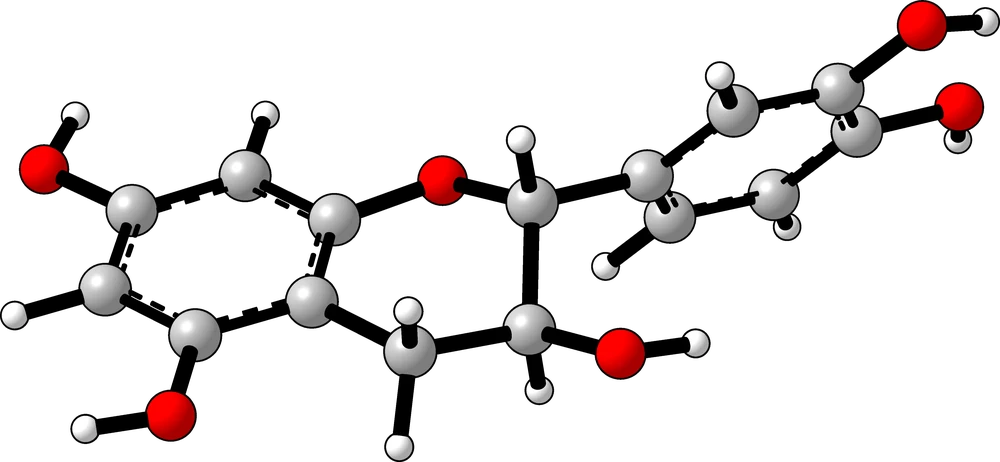

はじめてのGaussian計算
入力の書き方から出力の確認までを、カテキンで一通り体験します。
題材は、茶などに含まれるカテキン類の一つ、(+)-カテキン（C15H14O6）です。The subject is (+)-catechin (C15H14O6), one of the catechins found in tea and other plants.
0. 環境を準備する
Gaussianは有償ソフトです。まず、計算を実行できる場所を確認します。
| 選択肢 | 内容 | 費用 |
|---|---|---|
| 所属機関のライセンス・計算機 | 大学・研究所がサイトライセンスや共用計算機を持っている場合。 | 要確認 |
自然科学研究機構 岡崎共通研究施設 計算科学研究センター（RCCS） |
分子科学分野の共用スーパーコンピュータ。 | 無料（申請・年度ごとの報告が必要） |
大学の共同利用スーパーコンピュータ |
全国共同利用施設。学外の研究者も利用可。 | 有償（利用負担金） |
どの環境でも、計算の流れは同じです。手元で入力ファイル（.gjf/.com）を作り、計算機に送って実行し、出力ファイル（.log/.out）を手元に戻して確認します。
1. 入力ファイルの中身
Gaussianの入力は普通のテキストファイルです（拡張子 .gjf または .com）。上から順に5つの部品を書きます。空行は、ルート行の後・タイトルの後・座標の後に1行ずつ入れます。
%nprocshared=8 ← (1) Link 0: コア数・メモリ・chkファイル名
%mem=16GB
%chk=catechin_opt_freq.chk
#p B3LYP/6-31G(d) Opt Freq ← (2) ルート行: 計算方法と計算の種類
← 空行
(+)-catechin Opt+Freq ← (3) タイトル: 自由記述
← 空行
0 1 ← (4) 電荷 多重度
C -4.273953 -0.303693 -0.688531 ← (5) 座標: 元素記号 x y z（Å）
C -4.360353 -1.556559 -0.095452
...
← 最後に空行%nprocshared=8 ← (1) Link 0: cores, memory, checkpoint name
%mem=16GB
%chk=catechin_opt_freq.chk
#p B3LYP/6-31G(d) Opt Freq ← (2) route line: method and job type
← blank line
(+)-catechin Opt+Freq ← (3) title: free text
← blank line
0 1 ← (4) charge multiplicity
C -4.273953 -0.303693 -0.688531 ← (5) coordinates: symbol x y z (Å)
C -4.360353 -1.556559 -0.095452
...
← blank line at the end
| 部品 | 記載内容 |
|---|---|
| (1) Link 0 | %で始まる行。使うコア数（%nprocshared）、メモリ（%mem）、チェックポイントファイル名（%chk）。 |
| (2) ルート行 | #で始まる行。汎関数/基底関数と、計算の種類（Opt, Freq など）を書きます。 |
| (3) タイトル | メモ。計算には影響しません。 |
| (4) 電荷 多重度 | 中性の閉殻分子なら「0 1」。プロトン付加体などの一価のカチオンは「1 1」、脱プロトン体などの一価のアニオンは「-1 1」、中性のラジカル（二重項）は「0 2」。 |
| (5) 座標 | 1行に1原子。元素記号とx, y, z（Å）。 |
ルート行の読み方
- #p — 出力の詳しさ。#n（または # だけ）が標準、#p はリンクごとの実行時間などと SCF の収束の経過を追加、#t は最小限。
- B3LYP — 汎関数。電子の交換と相関の近似の仕方です。
- 6-31G(d) — 基底関数。電子の分布を表す関数の組です。
- Opt Freq — 構造を最適化してから、同じ構造で振動数を計算します。
用語は用語集に、方法の選び方は計算ガイドにまとめています。Terms are collected in the glossary; how to choose methods is in the Calculation guide.
2. 完成した入力：(+)-カテキン
以下はそのまま実行できる入力です。座標は Spartan'24 の MMFF94 配座探索で最も安定だった配座で、立体配置は(2R,3S)の(+)-カテキンです。The input below runs as is. The coordinates are the lowest-energy conformer from a Spartan'24 MMFF94 conformer search of (2R,3S)-(+)-catechin.

%nprocshared=8
%mem=16GB
%chk=catechin_opt_freq.chk
#p B3LYP/6-31G(d) Opt Freq
(+)-catechin Opt+Freq B3LYP/6-31G(d) gas phase
0 1
C -4.273953 -0.303693 -0.688531
C -4.360353 -1.556559 -0.095452
C -3.212798 -2.131002 0.447241
C -1.978114 -1.471723 0.400333
C -1.922713 -0.200459 -0.180401
C -3.064357 0.379581 -0.738310
C -0.748360 -2.098376 0.989688
C 0.525221 -1.407979 0.507751
C 0.306825 0.117488 0.562554
O -0.778212 0.542255 -0.278594
C 1.550077 0.867353 0.100565
O 1.605531 -1.838617 1.343802
C 2.406427 1.452857 1.046538
C 3.552537 2.111458 0.622618
C 3.867579 2.202085 -0.730020
C 3.036580 1.628812 -1.683120
C 1.881111 0.960352 -1.265823
O 5.011923 2.866944 -1.073397
O 4.378763 2.672402 1.553820
O -3.276686 -3.361912 1.038462
O -5.414027 0.229811 -1.214218
H -5.318474 -2.064636 -0.066428
H -2.989951 1.360817 -1.196191
H -0.688212 -3.162234 0.728534
H -0.813021 -2.046815 2.084457
H 0.738666 -1.729514 -0.520082
H 0.079252 0.432717 1.590721
H 2.421197 -1.430259 1.000734
H 2.189187 1.397446 2.110446
H 3.262748 1.689122 -2.742720
H 1.227879 0.514875 -2.014964
H 5.083884 2.863486 -2.043427
H 5.098299 3.078194 1.030209
H -4.195289 -3.677126 1.006539
H -5.207333 1.107551 -1.576955
自分の分子で作るには
流れの一例です。
- ChemDraw（無料ならReShiki）で構造式を描き、.mol で保存する
くさび・破線で立体配置を指定しておきます。ソフトの入手先は計算化学ソフトにあります。Specify stereochemistry with wedge/hash bonds. Where to get the software is listed under Computational chemistry software.
- Avogadroで3D化し、立体配置を確認して軽く最適化する
Avogadro 2 で .mol を開き、水素が足りなければ追加します。力場に MMFF94 を選んで構造を最適化し、立体配置が意図どおりかを確認して、.mol2 で保存します。
- SpartanでMMFF配座探索を行う
.mol2 を読み込み、Calculations → Conformer Distribution。得られた配座が配座と安定構造の出発点です。最初の練習では最低エネルギーの1配座だけを使います。Load the .mol2 and run Calculations → Conformer Distribution. The conformers are the starting point of Conformers and stable structures. For a first run, use only the lowest-energy one.
- Gaussian入力にする
Spartan から座標を書き出すか、Avogadro 2 の Input → Gaussian で入力を作り、計算の種類・汎関数・基底関数・溶媒をルート行に書いて .gjf を保存します。
3. 実行する
実行のしかたは計算機によって違います。
# Linuxで直接実行する場合 g16 catechin_opt_freq.gjf # ジョブ管理システム（Slurmなど）がある場合は、利用する計算機の手順に従って投入 # （run_g16.sh はその計算機で用意したジョブスクリプト） sbatch run_g16.sh # RCCS の場合 g16sub catechin_opt_freq.gjf
# Direct execution on Linux g16 catechin_opt_freq.gjf # With a job scheduler (e.g. Slurm), submit following the procedure of the machine you use # (run_g16.sh is a job script prepared for that machine) sbatch run_g16.sh # On RCCS g16sub catechin_opt_freq.gjf
出力は catechin_opt_freq.log（環境により .out）に書き出されます。共用計算機では %nprocshared と %mem の値をその計算機の規定に合わせます（RCCS の g16sub は、投入時の割り当てに合わせてこれらを設定します）。
4. 出力の見方：3か所だけ確認する
出力は長いですが、成功したかどうかは次の3か所で分かります。テキストエディターの検索機能で探します。
- 末尾に Normal termination があるか
Normal termination of Gaussian 16 at ...
Opt Freq では最適化の後にFreqが走るので、この行は2回出ます。代わりに Error termination があれば、その数行上に原因が書かれています。
- 最適化が収束したか
Item Value Threshold Converged? Maximum Force 0.000017 0.000450 YES RMS Force 0.000004 0.000300 YES Maximum Displacement 0.001114 0.001800 YES RMS Displacement 0.000341 0.001200 YES Predicted change in Energy=-9.745202D-09 Optimization completed. -- Stationary point found.「Stationary point found」と出ていれば収束です（通常は4項目すべてが YES）。この表は最適化のサイクルごとに出ます。Opt Freq では振動数解析の最後にも同じ表が出るので、そこでも YES がそろっていることを確認します。振動数解析の最後の表に NO があれば、虚振動が0でも停留点ではありません（エラー対応の「Opt後のFreqで収束していない」）。“Stationary point found” means converged (normally all four items are YES). The table is printed at every optimization cycle. With Opt Freq it is printed once more at the end of the frequency job; check that it is all YES there as well. If that table has NO, the structure is not a stationary point even with 0 imaginary frequencies (see “Not converged in the Freq after Opt” in Troubleshooting).
- 虚振動がないか
Frequencies -- 28.7801 36.2275 55.1887 Red. masses -- 6.1207 6.1679 6.6287
最初の Frequencies 行の値が正なら、安定構造（エネルギー極小）です。負の値（例：-45.6）が1つでもあれば、その構造はまだ極小ではありません。
Freqの出力には熱力学量も含まれます。配座比較に使う自由エネルギーは次の行です。
Sum of electronic and thermal Free Energies= -1031.108599
出力例はこのページのカテキンの計算です。最初の計算では振動数解析の最後の表に NO が出たため、Opt=CalcFC Freq で計算を続けました。振動数と自由エネルギーは、続けた計算の値です。
5. 止まったとき：最初によく出る3つのエラー
| 出力の文字列 | 意味 | 対処 |
|---|---|---|
Error termination via Lnk1e in .../l101.exe |
入力の書式エラー。計算が始まる前に止まります。 | 空行の位置、電荷・多重度の行、座標の列数を確認します。ルート行の綴りの誤りは l1.exe で止まります。 |
Convergence failure -- run terminated. |
SCF（電子状態の反復計算）が収束しません。 | 電荷・多重度と構造を確認し、ルート行に SCF=XQC を足して再実行します。詳しくCheck charge/multiplicity and the structure, add SCF=XQC to the route line and rerun. Details |
Number of steps exceeded, NStep= ... |
最適化が回数上限内に収束しませんでした。 | 出力の最後の構造を新しい入力にして続きを計算します。詳しくContinue from the last geometry in the output as a new input. Details |
エラー一覧はエラー対応にあります。The full list is on Troubleshooting.
次のステップ
1つの構造を最適化できたら、実際の研究では「その分子がとりうる複数の配座」を扱います。カテキンならOHの向きと環の形で数十の配座があります。